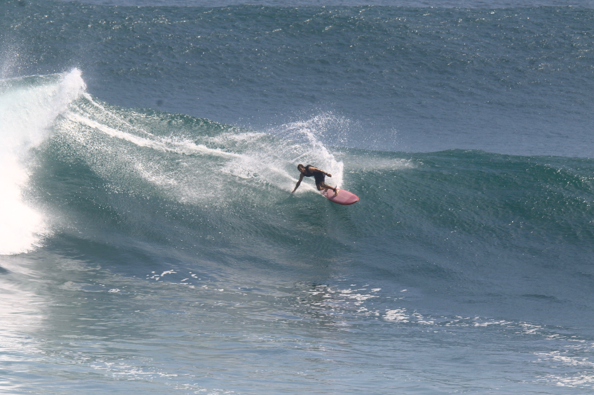
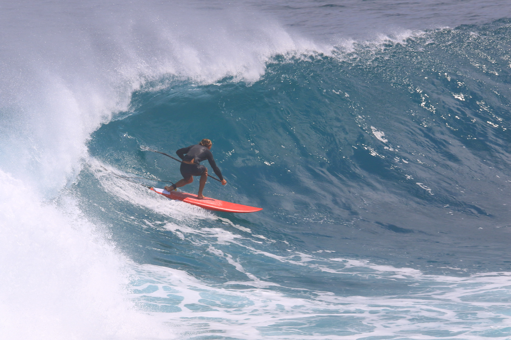

Индивидуальное обучение серфингу
Регулярные занятия с Ильёй Чайкой для начинающих и продолжающих серферов.
Регулярные занятия с Ильёй Чайкой для начинающих и продолжающих серферов.
В начале обучения внимание одновременно занято безопасностью, положением на доске, выбором волны, стартом и множеством новых ощущений. С регулярной практикой основные действия становятся привычными, и человек начинает лучше понимать, что происходит на воде.
По опыту Ильи, примерно 15–20 индивидуальных занятий помогают сформировать базу для самостоятельного серфинга: научиться ловить волны, ориентироваться на споте и объективнее оценивать происходящее.

